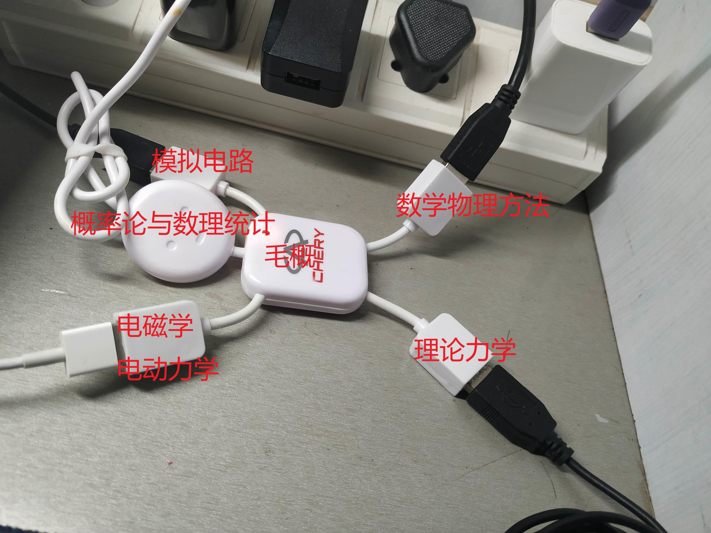

Too Much
梦想 too much
too much
若只选择一个
我会毫不怀疑走向你
跟着你走 ……
诱惑 too much
too much
在这歌声之中
我们要永远不为所动
有始有终……
仔细想想，会发现现在的我想去做很多事情，想去学很多东西。例如，在学习和research方面，我之前列举过一些图谱包含了想学的知识——固体物理方面的群论、多体、拓扑、DFT数值，光学方面的非线性、光路、成像、激光、包括实验上一些仪器及控制等等，电子方面模电、数电、画板子、信号与系统等等，CS、Econ方面也有很多等等，读文献更不用说（文献更是浩如烟海too much）这里就不一一列举了；在社会化方面，学车、买车，旅游，徒步，摄影，参与社交活动，找对象dating，学炒股理财等等；在运动方面，跑步、乒乓球、篮球、网球、羽毛球等等；在游戏方面，炉石、酒馆、各种新的魂游，也想重新拾起围棋; 娱乐方面还包含着看小说、自传（我放着好多书都没看呢），看剧、动漫，研究做饭、盆栽等等。突然这么列举一下，发现自己想干的事情确实是too much。（这么多想干的事情也确实给我每天少刷手机+六点半起床+制定计划提供了动力 樂）。
然而正如《too much》的歌词里所说，“梦想 too much，too much，若只选择一个”。我们注定没有时间去在短时间内完成所有自己想做的事情，甚至有时候，一些不想做的必要性事物也会侵占我们的时间，这时候就要确立每个阶段的主线任务，并保持耐心和简单的满足感。想象这样一个场景，我结束了一天的工作回来，这时脑海中有无数件想做的事情，这些事情牵扯着我的精力，就如同五马分尸一样（详见本文配图，应该是我大二时候自己p的图，真的超级形象）让我单纠结干什么就消耗了大量的时间，从而迟迟难以invoke系统2进行深度心流工作，一个典型的例子就是看着自己书单里收藏的好多好书以及endnote里的好文献，来回切换却迟迟不挑一个进入。我们需要立刻切断四散漂流的思绪和想法，赶快挑一件具体的事物work on沉浸下来。每日的计划就起到这样一个效果，赶快按着计划上的具体事做吧！不用再乱想去做其它的事情了！
这可能是一种浮躁的好高骛远。想做很多事情，甚至在计划的时候都会预设自己有着超绝的精力可以完成各种各样想做的事情，但仔细想想，哪一次自己可以完美地完成计划上的所有事？哪怕只是完成了一两件事情，都已经是了不起的成就了！工作时间也是一样，你以为自己要每天工作7，8小时，但在若高效率的加持下其实4个小时就已经很productive了。想法不能先于实干的行动。
